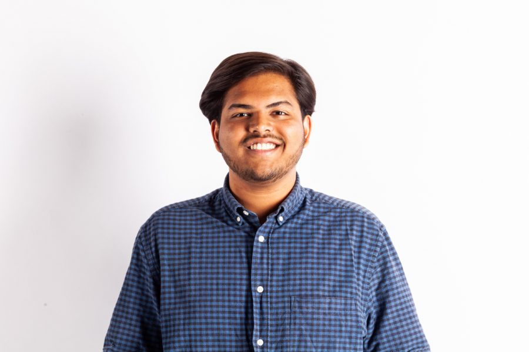

April 9, 2019
The Daily Iowan

DI Staffer Aadit Tambe poses for a portrait on Monday, April 8, 2019. (Wyatt Dlouhy/ The Daily Iowan)
Beaming at me, she asked how my day was going, and what I studied. Following the brief interchange, I sat by the window, watching a stream of snow blow across Dubuque Street.
I sipped my warm double espresso and ruminated on the “Iowa nice” attitude at the center of the interaction — something I was foreign to growing up.
Originally from India, I am one of the 1,768 undergraduate international students enrolled at the University of Iowa. But when I first came here in 2016, this number was 2,478: in fact, the number of international students has been declining over the past five years.
Fewer international students not only make our community less diverse but also affect an important funding source for colleges in the United States. A plunge in international-student enrollment translates to domestic students getting fewer chances to interact with people from different cultures.
“ To me, however, this not-so-subtle change means fewer people look the way I do. But I am determined to work hard, feel included, and ‘live the American dream.’”
To me, however, this not-so-subtle change means fewer people look the way I do. But I am determined to work hard, feel included, and “live the American dream.”
When I first came to Iowa, I felt out of place. I had to make a decision: I could either spend my four years of college feeling like an outsider because of my looks, my accent, and my choices; or I could embrace the differences and choose to feel like an “insider.”
This might seem like an interesting challenge to feel like an “insider.” After all, I was born in 1999 in Mumbai — a city with a population five times that of Chicago. The city exudes a muggy climate all year-round, with both summer and winter temperatures in the 80s-90s. The city is filled with hard-working laborers, film stars, business tycoons, and people who sleep in tents made of canvas or tin. Thousands of people flock to Mumbai every day with the hope that their dreams will become reality.
“ When I first came to Iowa, I felt out of place. I had to make a decision: I could either spend my four years of college feeling like an outsider because of my looks, my accent, and my choices; or I could embrace the differences…”
To me, however, Mumbai was more than this — it was home.
When I was in fourth grade, my family relocated to Pune, a smaller city about 100 miles from Mumbai. This meant that I would move away from my grandfather, my friends, and most of all, a place I was used to calling “home.”
Soon after moving to Pune, my grades slacked. I did not have many friends in school. I was neither good at studies nor at sports. Apart from my parents and a couple of teachers at my new school, I sensed that no one believed in me. This feeling began to haunt me.
Growing up, I realized my interests were different from others’. I was not fascinated with playing sports, reading fictional books, or watching kids’ movies. I would take pleasure in unconventional activities such as reading nonfiction books, writing poems, keeping up with political happenings, watching TED Talks, and helping my parents in the kitchen.
I was emotionally sensitive as a growing child — I cared about people, and what they thought of me. School authorities did not accept me for who I was. My teachers told me I was a “little too feminine.”
Being a boy, I was required to be good at math and science and have an interest in sports. But I didn’t fit that model. In fifth grade, my school principal called my parents to speak with them because — despite my good grades in history, languages, and geography, my grades in math and science were suffering. It was a warning for me to “pull up my socks” — a British expression meaning “straighten up.”
My teachers did not realize that despite being in fifth grade, I possessed an in-depth understanding of India’s political system. I knew everything about fountain pens. I loved visiting antique stores and spent most of my money on buying parts I needed to restore fountain pens.
No one outside my family accepted my unconventional sense of masculinity. I could feel the system was ganging up against me.
Things changed when I switched schools after 10th grade. I met people from diverse backgrounds in my new school who understood me. I could be myself around my new friends, and after a long time, I started enjoying being with people.
My goal had always been to study journalism. I have always enjoyed telling stories, and being a journalist would give me a unique platform of telling others’ stories. Being open-minded, my parents encouraged me to move to the U.S. for college. I liked Iowa’s journalism program and decided to accept the admission offer.
But during my first week in Iowa City, I felt out of place. It was clear to me that I was different — I did not look like the people around me. Once again, I was struggling to fit in.
On my third day in Iowa City, I met with a fellow international student who was also from India. He narrated a quote from a well-known Hindi film which translates to: “People naturally don’t share a sense of belonging. One needs to evoke this feeling in them.”
This quote resonated with me.
“ In a place where no one shared similarities in terms of appearance, I was encouraged to be myself and I was accepted for who I was.”
I decided to go the extra mile to seek common ground between myself and people around me. Determined to feel included, I looked beyond differences to build relationships on commonalities. I stopped searching for people who “looked like me.”
Soon, I realized I was surrounded by people who cared for me. I started working for The Daily Iowan — a place where I was able to connect with fellow staffers whose interests aligned with mine.
In a place where no one shared similarities in terms of appearance, I was encouraged to be myself and I was accepted for who I was.
In a community in which two years ago I feared experiencing exclusion, I have created a place for myself. My hard work has received recognition, and I have been able to grow as a journalist and as a person.
However, not everyone has the approach to feeling included as I do. Perhaps the decreasing number of international students at Iowa and in the U.S. reflects that sentiment.
According to a 2018 report from Immigration and Customs Enforcement, there are approximately 1.2 million international students in the U.S.
Starting in the fall of 2015, new enrollment of international students slowed to 2.4 percent growth, and then exhibited declines in both the fall of 2016 (minus-3.3 percent) and fall 2017 (minus-6.6 percent), according to a report from the Institute of International Education.
The decline is even more pronounced at the UI. According to the state Board of Regents, the UI had 516 fewer international students enrolled in the fall of 2017 compared to the fall of 2016 — a 14.2 percent decrease.
These numbers pose a challenge not only to the UI but also to the state’s economy. According to an analysis by NAFSA: Association of International Educators, international students in the U.S. contribute $39 billion and support more than 455,000 jobs in the U.S. economy, in any given academic year, largely because international students do not qualify for aid from the state.
Going beyond looking at international students as mere cash cows, I’d like to think we enrich U.S. campuses by bringing in our diverse perspectives. A decline in enrollment obviously provides domestic students fewer chances to interact with students from diverse backgrounds.
This line chart shows top six countries international students have been coming from over the last five years.
Source: University of Iowa Data Digest
After learning about this decline, I sat down with Associate Provost for International Programs Downing Thomas to understand the reasons behind the decline. He said the decline stems from two primary reasons: the increasing pool of countries that are available to students who wish to study abroad and the rising anxiety and tensions because of current U.S. immigration policy.
“Some countries are building their infrastructure,” he said. “They are building universities and improving the quality of their educational systems. There is also a lot of competition in the U.S. and also internationally. So it’s really challenging.”
Thomas said the tensions pertaining to immigration policy have been a reason for many students to not feel welcomed by the U.S.
“Perceptions of the U.S., ‘Will I be welcomed and feel like home?’ ” he said. “I think those are questions that people ask themselves that now may be one of the factors that [have led to the decrease].”
This bar chart shows top six countries international students have been coming from over the last five years.
Source: University of Iowa Data Digest
Over the past three years, I have talked to hundreds of Americans who have expressed anxiety as they consider this a dark time for the U.S. In times of political uncertainty, the country seems divided. People on both sides of the political spectrum seem to be losing hope in the philosophy this country was founded on.
“ Coming from a country thousands of miles away, I have been able to call this place home. Among people who don’t look like me or talk like me, I have found people who accept and love me for who I am and treat me like one of them. In this supposed dark time, I have been able to make sense of the American dream. ”
But I hope you might consider my own perspective — while there is the bad, there is also the good. I have experienced love here — an emotion that binds us all together. The U.S. has challenged me to aspire and encouraged me to live my dream.
Coming from a country thousands of miles away, I have been able to call this place home. Among people who don’t look like me or talk like me, I have found people who accept and love me for who I am and treat me like one of them. In this supposed dark time, I have been able to make sense of the American dream.
As I was finishing this piece at 3 a.m. last week, I was sitting on a bed watching a movie with my coworkers. My friend turned to me.
“I hope you can stay here,” she said. “Or wherever you want. But I hope we always remain friends.”
And the movie continued.
This interactive map shows the top six countries international students have been coming from over the past four years. Click on the markers for more information.
Source: University of Iowa Data Digest
I am Aadit, a journalist pursuing my bachelor's degree in Journalism and Mass Communication, and a minor in German at the University of Iowa.
I currently serve as Assistant Digital Editor at The Daily Iowan, an independent newspaper based in Iowa City. I have an interest in digital storytelling and web development.
Originally from Mumbai, India, telling stories was always my dream. In order to pursue my passion for journalism, I wanted to create a strong educational platform for myself. After looking at the University of Iowa's journalism program, and The Daily Iowan, I chose to accept the admission offer.
Journalism to me stands for guarding the truth, giving voice to the voiceless, and unbiased storytelling. I believe as members of the fourth estate, journalists play the key role in informing the electorate.